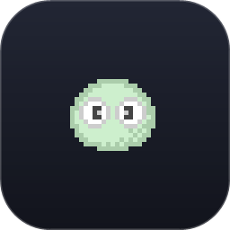

50层魔塔 v0.1.34 · 2026-11-06（最新 v0.1.35）
Coopanion 桌宠 World 插件 · npm: cortico-world-mota
源码：github.com/userchang/cortico-world-mota
这是什么
Coopanion 桌宠（Coo）的 HTML5 魔塔 World 插件（h5魔塔（50层））：让 Coo 在本机经典 HTML5 魔塔里自己看地图、走格子、算战损、打怪与存读档，并在推塔过程中汇报战况或求助。理论上支持所有基于 HTML5 魔塔样板制作的经典魔塔及其衍生变体。
功能
- 信息感知：
mota_status状态、mota_map楼层地图与可达性、mota_battle战斗预估、mota_screenshot截图、mota_resources全塔剩余物资 - 移动与交互：连续走格、自动瞬移或寻路到目标坐标、飞行器跳层，以及剧情对话与选项处理
- 存读档保护：支持查看/保存/读取手动与自动存档，默认不覆盖已有占用槽位
- 陪伴推塔：支持开启「主动推塔」与阶段战况汇报，卡关时主动向主人求助
安装与连接
- 安装插件：
npm install cortico-world-mota，或在 Coopanion「扩展」页选择插件目录安装为 World 并启用 - 打开 World 设置的「游戏连接」，点击 生成并保存令牌
- 点击 下载 coopanion.js 放进魔塔游戏目录的
extensions/文件夹，再按需更新src/game-adapter.js - 刷新本地魔塔页面（默认
http://127.0.0.1:1055），连接成功后即可开始
需要什么 & 注意事项
- Node.js 22+、Coopanion（Cortico world API 6）以及本地运行的 HTML5 魔塔（默认桥接端口
127.0.0.1:1060） - 高消耗提醒：开启「主动推塔」后（默认每 60 秒唤醒）Token 消耗较大，建议搭配高性价比模型，不玩时关闭主动推塔